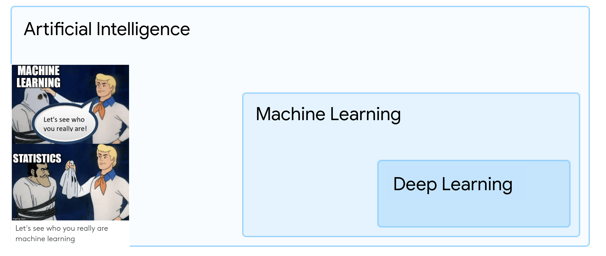
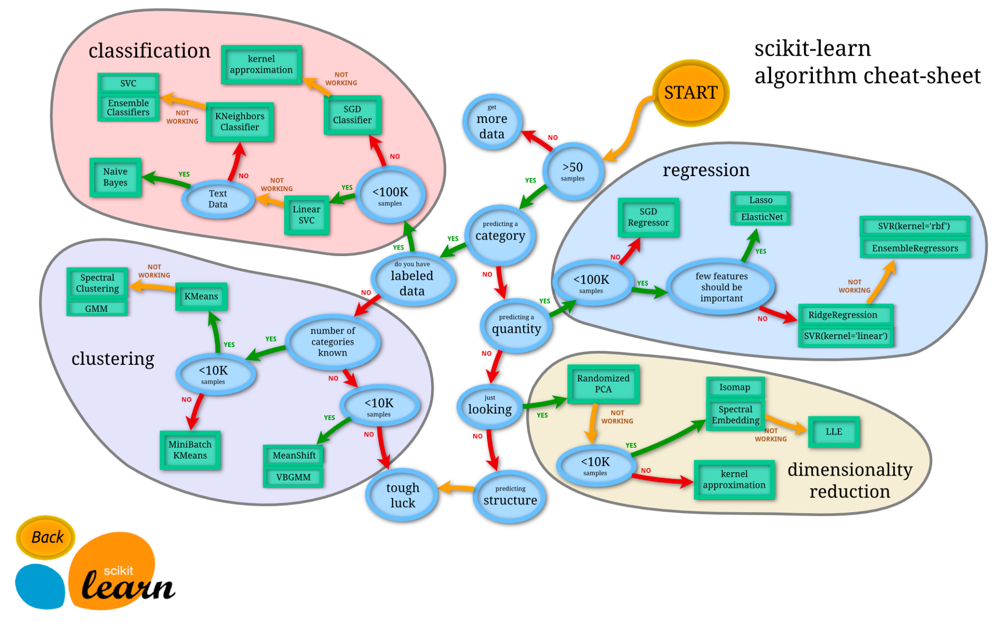
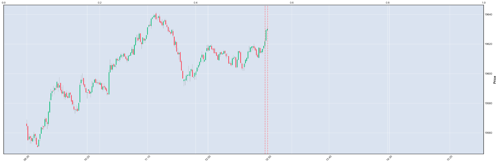

Introduction to Machine Learning#
In todays day and age, the amount of data that is being generated is increasing at an exponential rate.
This data can be used to gain insights into various aspects of the world.
Machine learning is a field of computer science that uses
statistical techniques and ‘Mathematical Operations’ to give computer systems
the ability to “learn” (i.e., progressively improve performance on a specific
task) with data, without being explicitly programmed.
Machine learning is a subset of Artificial Intelligence.
Machine learning algorithms build a mathematical model based on sample data,
known as “training data”, in order to make predictions or decisions without
being explicitly programmed to perform the task.
Introduction to the World of AI/ML#
Machine Learning in essence is basically Mathematics on overdrive.
What is Machine Learning? What is the basic level of ML?
Imagine the following code:
if x>10:
print("x is greater than 10")
else:
print("x is less than 10")
Is this Machine Learning?
No, this is a rule based system. But re-imagine this example as follows:
if x>y:
print("x is greater than 10")
else:
print("x is less than 10")
where the value of y is adjusted but mathematical operations and
feedback rather than you explicitly setting the value as 10.
Is this now Machine Learning?
Yes, this is a basic example of
Machine Learning.
First try to understand What is Artificial Intelligence?
Think of Artificial Intelligence, the buzzword of the decade, as the ability to learn the art of decision making.
Whether the decision is the action to switch on the bulb based on light intensity on the sensor or the descision to
turn the car wheel in case of any object detected in front of the car or the ability to predict the next word in
the sequence of sentence, or just taking the descision to determine which object is present in the image.
Machine Learning is the subset of this AI, ML is about building a mathematical set of equations which take
some set of inputs and outputs a value which can be inferred by down stream systems as a descision.
ML is the if..else...end condition that saves our efforts to come up with rules that execute certain actions.
Read more on this, the correct name for this process is called Markov decision process
Now having said that, its imperative to understand that Machine Learning the folling points:
Machine Learning is not a magic wand that can solve all the problems.#
Think about the problem statement:
“I want to predict the stock price of a company for the next 10 days with
100%accuracy. Considerallthe news, the financial reports, the market conditions, the global economy, the political conditions, the weather, the mood of the CEO, the mood of the employees, the mood of the investors, the mood of the market, the mood of the world, the mood of the universe, the mood of the aliens, the mood of the sun, the mood of the moon, the mood of the stars, the mood of the black hole, the mood of the dark matter, the mood of the dark energy, the mood of the dark force, the mood of the dark side… and so on.”
This is a very common problem statement that is thrown around in the world of Machine Learning(not all the moods, but some of them are included).
People consider Machine Learning as the magic wand that can pull up all the data, do its hocus focus and give you the answer. No Machine Learning cannot do that.
Machine Learning is purely mathematics. Anything and everything that you would solve via Machine Learning first needs to be translated to mathematics first and then back to business problem.#
Now Consider the same problem statement:
“I want to predict the stock price of a company for the next 10 days with
a considerable/acceptable/Highaccuracy. Considerrelevantthe news, the financial reports. Provide me with the probability of the stock price going up or down.”
This is a more realistic problem statement. What you need here is to translate the problem statement to a mathematical problem statement.
Translated Mathematical statement: “Given the historical data of the stock price, the news, the financial reports, predict the
estimatedstock price of the company for the next10 dayswith a probability of the stock price going up or down.”
This translated statement means that the model would get historical data and vectorized financial statements and news data and then predict/estimate the stock price for the next 10 days. It should also provide a probability/confidence score of the stock price going up or down, values ranging [-1, 1].
Machine Learning leverages the power of Statistics and generalizes the input data in various dimensions and equation to represent the input data in a mathematical form and then applies further transformations and operations to output a value.
This value is then “inferred” as a decision by the downstream systems. A value output of [-1, 1] would be inferred as a confidence score and the direction of the stock movement, or a value like -2.4 or +5.4 may be inferred as the delta in the current value of the stock. How you infer the value is up to you and the business problem.

Machine Learning: The process#
With all the modern free and open source libraries available, the process of Machine Learning has been simplified to a great extent.
Technically for a layman, the concept of building a model can be boiled down to the following code:
model = Model() # Any kind of model
model.fit(training_data) # Fit the model with the training data
model.predict(test_data) # Predict the output of the test data
This is the basic most simplified code for Machine Learning.
But in reality, the process of Machine Learning is a bit more complex. The process can be broken down into the following steps:
Problem Statement: Define the problem statement. What are you trying to solve? What is the business problem? What is the mathematical problem?
Data Collection: Collect the data. The data can be in any form, structured, unstructured, semi-structured. The data can be from various sources, databases, files, APIs, etc.
Data Preprocessing: Clean the data. The data collected may have missing values, outliers, etc. The data needs to be cleaned and preprocessed before feeding it to the model.
Feature Engineering: The data collected may have a lot of features. Some features may be irrelevant, some may be redundant. The data needs to be analyzed and features need to be selected which are relevant to the problem statement.
Model Selection: Select the model. There are various models available for various problems. The model needs to be selected based on the problem statement.
Model Training: Train the model. The model needs to be trained with the training data. The model learns the patterns in the data and builds a mathematical model.
Model Evaluation: Evaluate the model. The model needs to be evaluated with the test data. The model is evaluated based on various metrics like accuracy, precision, recall, etc.
Model Tuning: Tune the model. The model may not give the desired results in the first go. The model needs to be tuned with various hyperparameters to get the best results.
Model Deployment: Deploy the model. The model needs to be deployed in the production environment. The model should be able to take the input data and give the output.
Model Monitoring: Monitor the model. The model needs to be monitored in the production environment. The model should be able to handle the real-time data and give the output.
Model Maintenance: Maintain the model. The model needs to be maintained in the production environment. The model should be able to adapt to the changing data and give the output.
Model Prediction: Predict the output. The model is now ready to predict the output based on the input data.
Model Inference: Infer the output. The output of the model is inferred based on the problem statement. The output can be in any form, a class label, a probability, a value, etc.
Downstream Systems: The output of the model is used by the downstream systems to make the decisions. The downstream systems can be any system that takes the output of the model and makes the decisions.
Feedback Loop: The output of the downstream systems is fed back to the model. The model learns from the feedback and improves the predictions. The feedback loop is essential for the model to learn and adapt to the changing data.
This is the overall project structure of a Machine Learning project. The process may vary based on the problem statement and the data available.
In fact, many times, some steps of the process may need to be performed in reverse to actually understand how the previous step would even be designed.
With the project oriented approach, I will try to illustrate each step in this notebook.
Types of Machine Learning#
Machine Learning is a vast field and can be divided into various categories based on the type of learning and the nature of the data.
Machine Learning can be visualized in 2 different dimensions:
What needs to be done
How it should be done
Think of a problem statement.
Business Question: “Predict the weather conditions of the next upcoming weekend.”
Now Ask yourself the following questions:
What needs to be done: Predict the weather conditions
What do you mean predict the weather conditions? Do you want to predict the temperature, the humidity, the wind speed, the precipitation, the cloud cover, the visibility, the air pressure, the weather type, etc?
In what form do you want the prediction? Do you want the prediction in the form of a class label, a probability, a value, etc?
Does the business need predictions at day level, hour level, minute level, etc?
How is the data going to be used? Is the data going to be used for decision making, reporting, analysis, etc?
How it should be done: Predict the weather conditions
What kind of data do you have? Do you have historical data, real-time data, forecast data, etc? Do you have structured data, unstructured data, semi-structured data, etc?
When it comes to types of Machine Learning, the following questions are most relevant to ask:
What needs to be done:
What do you mean predict the weather conditions? Do you want to predict the temperature, the humidity, the wind speed, the precipitation, the cloud cover, the visibility, the air pressure, the weather type, etc?
How it should be done:
What kind of data do you have? Do you have historical data, real-time data, forecast data, etc? Do you have structured data, unstructured data, semi-structured data, etc?
The above questions formulate what I call the Matrix of Problems.
Matrix of problems: Supervised/Unsupervised, Regression/Classification#
Most problem statements in classical Machine Learning can be formulated in the following matrix(example given in the table):
starting statement: “Based on the historical data, …”
Objective/Type Of Learning |
Supervised |
Unsupervised |
|---|---|---|
|
predict the temperature and the humidity values |
estimate the temperature based on similar days |
|
predict if the day is going to be pleasent/rainy/sunny/windy |
estimate the day class based on similar days in past |
|
Not Applicable |
discovering data patterns, identifying behaviors |
The above table does not cover all the use cases like combinatorics problems, optimization problems, Anomaly detection, etc. But the above table gives a good idea of the types of problems that can be solved using Machine Learning.
Below is a representative map for scikit learn library which provides a good set of algorithms which are used to solve ML problems. It can be used as a reference to understand the types of problems that can be solved using Machine Learning.
 |
|---|
Source: scikit-learn |
Introduction to Project Oriented Approach: Stock Market#
 |
|---|
Stock Market Problem Statement |